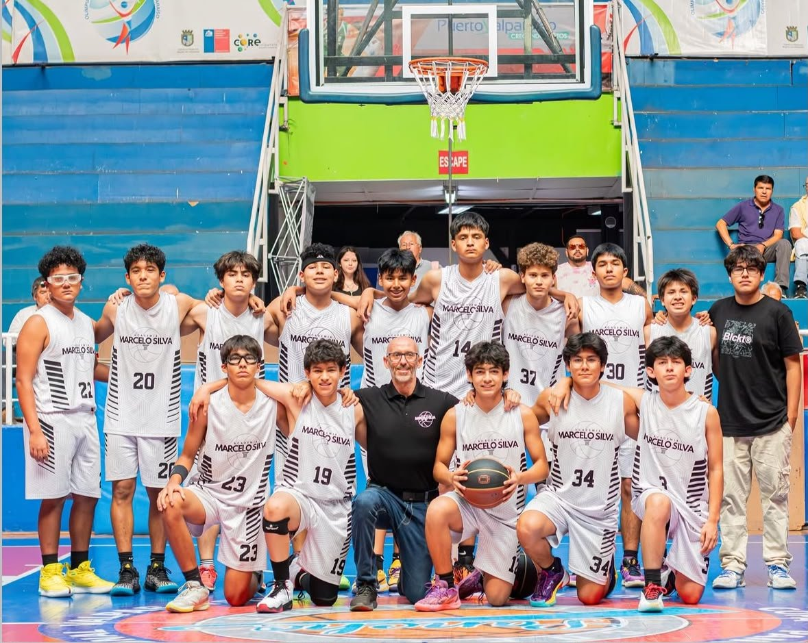
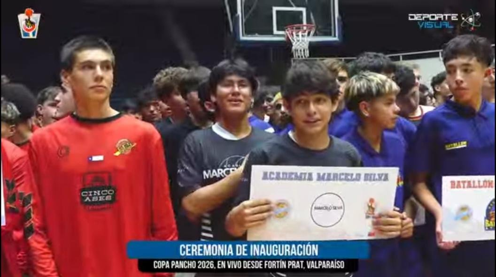
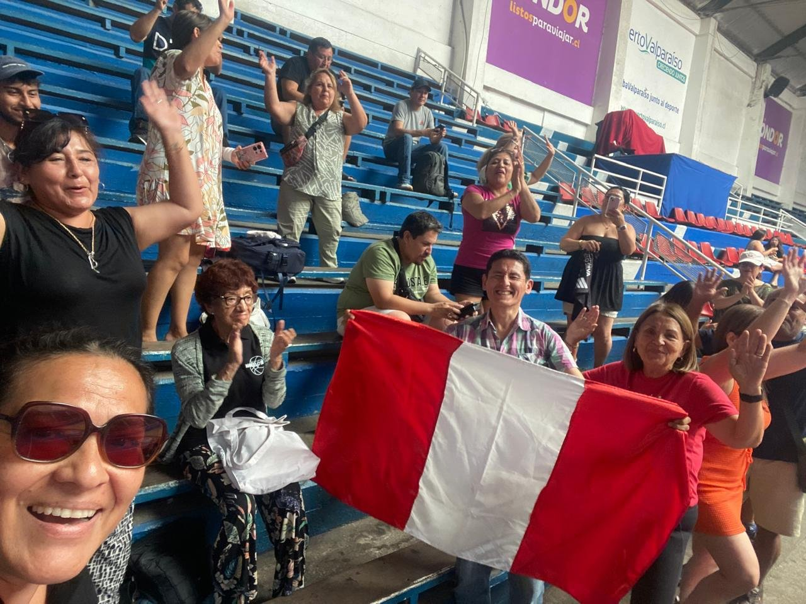
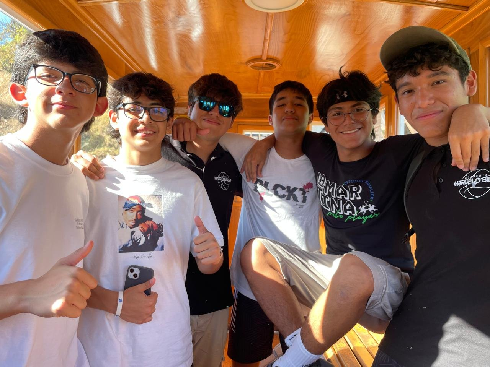
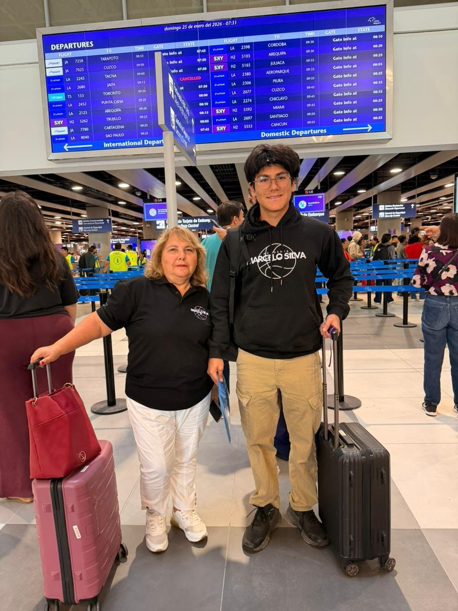
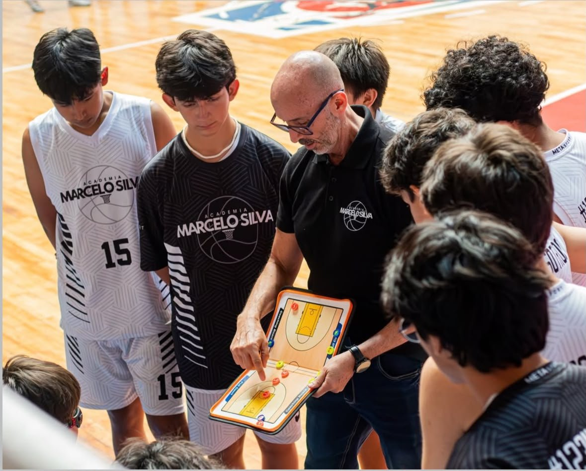
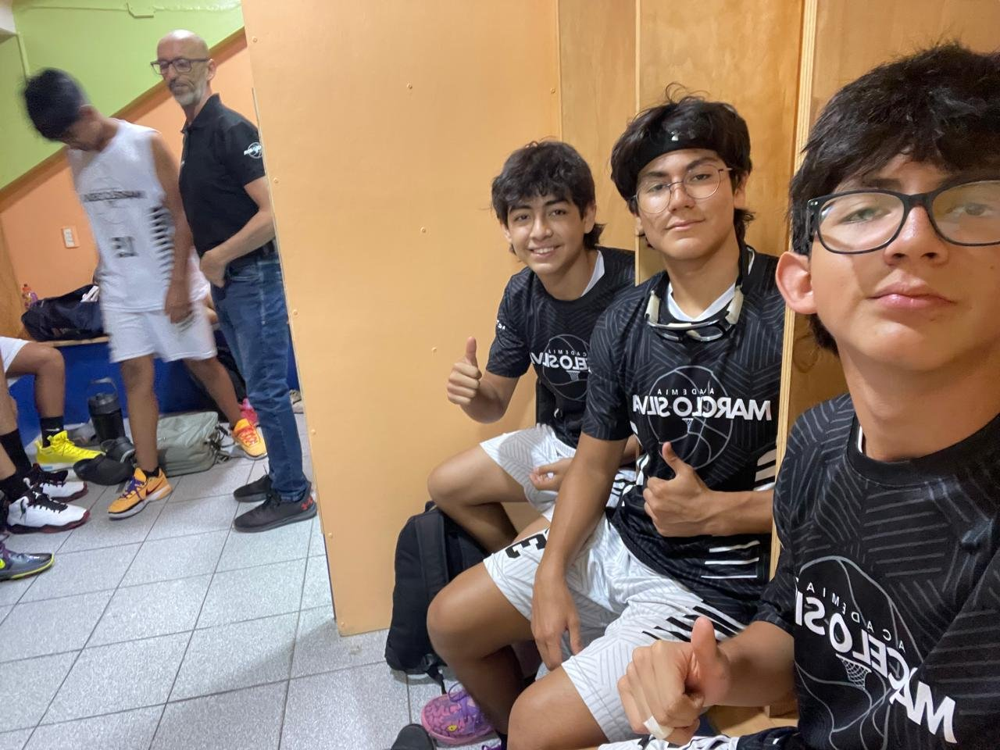
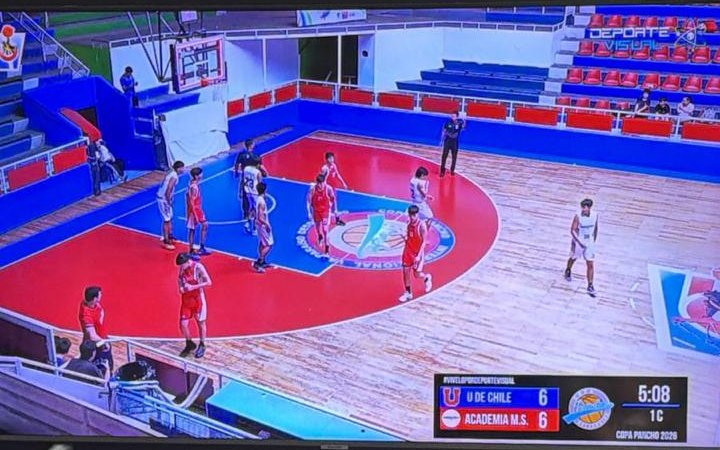

Creatividad, Actividad y Servicio




Copa Pancho 2026 · Valparaíso, Chile · con la Academia Marcelo Silva
Para esta experiencia CAS viajé a Chile con mi equipo, la Academia Marcelo Silva, para competir en la Copa Pancho 2026, un torneo internacional de básquet que se jugó en el Fortín Prat de Valparaíso. Salimos de Lima el 25 de enero y nos quedamos dos semanas. Viajé con mi abuela, que fue la que me acompañó todo el viaje.
Jugamos unos siete partidos contra equipos de Chile y de otros lugares, y algunos hasta se transmitieron en vivo por internet. Juego con el número 34. Perdimos, pero luchamos cada partido hasta el final, y lo que me llevé de este viaje va mucho más allá del resultado.




Antes del viaje sabíamos que íbamos a enfrentar a equipos con mucha experiencia, porque en Chile el básquet juvenil está bastante desarrollado. Con el profesor vimos cómo juegan los equipos de allá: son más físicos, corren mucho la cancha y presionan en defensa. Eso nos hizo entender que no bastaba con tener buena técnica, también teníamos que estar bien preparados físicamente y jugar muy ordenados.
También me informé sobre el viaje en sí: cómo era Valparaíso, dónde nos íbamos a quedar y cómo iba a ser la rutina de partidos. Era la primera vez que competía fuera del Perú, así que quería saber a qué me estaba enfrentando.
Entrenamos durante casi dos meses antes del viaje. Trabajamos la parte física, los fundamentos y, sobre todo, las jugadas en equipo. El profesor nos armaba las jugadas en su pizarra y las practicábamos una y otra vez hasta que salieran automáticas. Esa parte también tuvo algo de creatividad, porque teníamos que pensar cómo adaptar las jugadas según el rival y buscar soluciones cuando algo no funcionaba.
Además de lo deportivo, había que prepararse para viajar: organizar la maleta con la ropa de juego, coordinar con mi abuela y con los demás padres, y estar listos para convivir dos semanas con el equipo lejos de casa.
El torneo empezó con la ceremonia de inauguración, donde desfilamos todos los equipos con nuestros carteles. Ver a tantos equipos juntos me hizo darme cuenta de que esto era algo grande. Después vinieron los partidos, uno tras otro. Algunos estuvieron parejos por momentos, como contra la Universidad de Chile, que íbamos 6 a 6 en el primer cuarto, pero al final no nos alcanzó.
Hubo un partido en el que jugué muy mal, y en el siguiente me dejaron en la banca el partido completo. Me dolió, pero no me desanimé. Me quedé parado alentando, gritándole a mis compañeros, pasándoles agua y avisándoles lo que veía desde afuera. Entendí que en ese momento mi forma de ayudar al equipo era esa.
Fuera de la cancha también pasaron muchas cosas. Compartí cuarto con mis mejores amigos, Alejandro y Joaquín, y jugamos y nos reímos muchísimo. Un día nos agarró una lluvia fuerte en el terminal de buses y terminamos corriendo y resbalándonos en el agua como niños. Aunque perdíamos, las risas nunca faltaron, y en las tribunas siempre estaban nuestras familias con la bandera del Perú alentándonos.
¿Qué aprendí? Aprendí que el trabajo en equipo no se mide solo por el marcador. Perdimos, pero nunca nos rendimos ni nos echamos la culpa entre nosotros. El profesor siempre nos decía que éramos muy buenos y que teníamos la capacidad de ganar todo lo que nos propusiéramos, que solo nos faltaba creérnoslo, porque él ya creía en nosotros. Esa frase se me quedó grabada: a veces el rival más difícil es la inseguridad de uno mismo.
¿Cómo me sentí? Al principio, emocionado y nervioso por ser mi primer torneo fuera del país. Después de cada derrota me sentía frustrado, sobre todo el día que me mandaron a la banca. Pero ver que el equipo seguía unido me levantaba el ánimo. Al final del viaje me sentí orgulloso de cómo luchamos, aunque el resultado no haya sido el que queríamos.
¿Qué desafíos enfrenté? El más grande fue no desanimarme cuando me tocó quedarme en la banca. Lo fácil habría sido quedarme callado y molesto, pero decidí apoyar a mis compañeros desde afuera. También fue difícil levantarse después de perder y volver a salir a la cancha con ganas.
¿Cómo contribuyó a mi crecimiento? Me di cuenta de que ser buen compañero no es solo meter puntos, es estar para el equipo en los momentos malos. También reforcé mucho mi amistad con Alejandro y Joaquín; convivir dos semanas nos unió más de lo que ya estábamos. Y me llevo la lección del profesor: si nosotros no creemos en lo que podemos hacer, nadie lo va a hacer por nosotros.
Video 1: Con el profesor en el bus camino a un partido
Video 2: Perdimos, pero las risas nunca faltaron (la lluvia en el terminal)
Saliendo de Lima con mi abuela, el 25 de enero
La ceremonia de inauguración de la Copa Pancho 2026, transmitida en vivo
El equipo completo en el Fortín Prat (yo soy el 34)
El profesor armando la jugada en la pizarra: aquí se trabaja en equipo
En el vestuario antes de salir a la cancha
El partido contra la U de Chile, pasándolo en la tele (6 a 6 en el primer cuarto)
Nuestras familias alentando con la bandera del Perú
Con mis amigos en uno de los ascensores de Valparaíso
Porque entrenamos juntos casi dos meses, armamos las jugadas con el profesor y nunca nos echamos la culpa entre nosotros. Lo más importante fue el partido en que me tocó quedarme en la banca: en vez de molestarme, alenté y apoyé a mis compañeros desde afuera. Ahí entendí que ser parte de un equipo no es solo jugar. Además, reforcé mucho mi amistad con Alejandro y Joaquín.
En algunos partidos nos frustramos y nos faltó comunicarnos mejor dentro de la cancha. También me costó aceptar la banca al principio. Para llegar al 7 tendría que hablar más en la cancha, ayudar a organizar al equipo cuando las cosas salen mal y animar a los demás desde el primer minuto, no solo cuando ya estoy tranquilo.
Ingresa la contraseña para editar los porcentajes